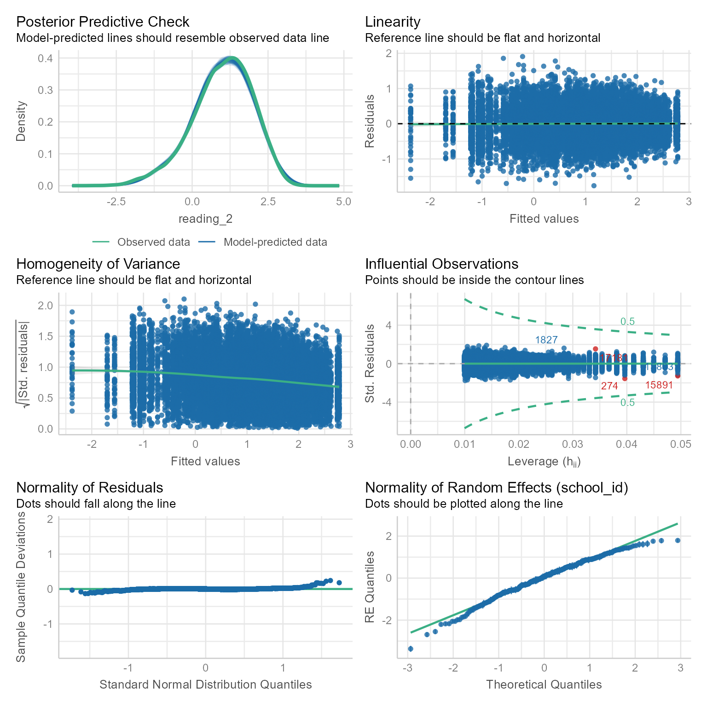
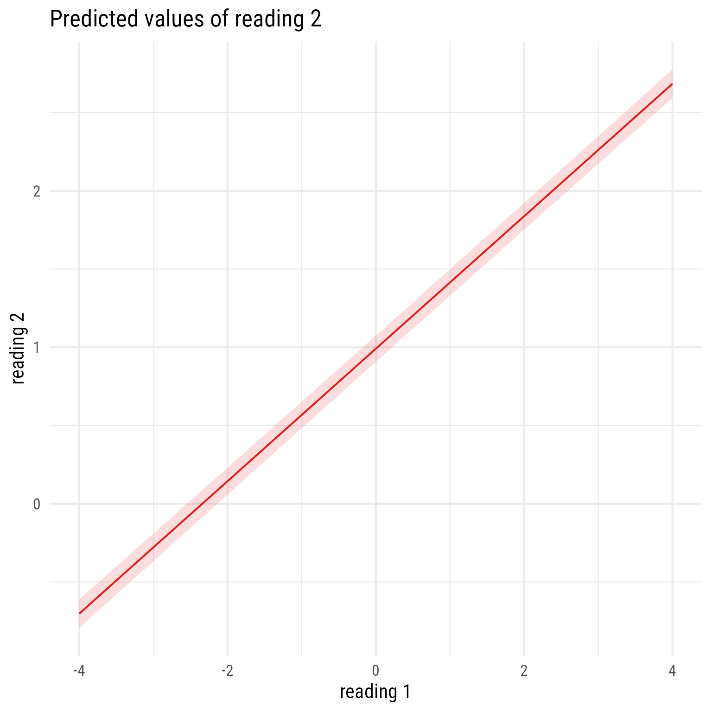

library(tidyverse) # Data wrangling and visualization
library(lme4) # Multilevel modeling
library(broom.mixed) # Model information
library(easystats) # Model information and visualization
library(sjPlot) # Model plots and tablesThis is a long tutorial. Don’t let that scare you. Once understood, the analyses themselves do not take that much time or effort to complete. My goal here is to give you a sense of your options when conducting analyses like these.
Load packages
Data Description
Suppose that statewide reforms in reading instruction appear to be successful in improving reading test scores, particularly in low-SES schools. We are not going to do a longitudinal analysis just yet. Here we are going to concentrate on understanding the relationships among reading scores and socioeconomic status.
| Variable | Description |
|---|---|
school_id |
A code for the school |
reading_1 |
Each student’s reading test score in z-score units last year before the reform. |
reading_2 |
Each student’s reading test score in z-score units this year after the reform. |
school_ses |
Each school’s average level of socioeconomic status, measured in z-score units |
Import data
d <- read_csv("https://github.com/wjschne/EDUC5529/raw/master/dhw4.csv") %>%
mutate(school_id = factor(school_id) %>%
fct_reorder(school_ses, mean))Rows: 18257 Columns: 4
── Column specification ────────────────────────────────────────────────────────
Delimiter: ","
dbl (4): school_id, reading_1, reading_2, school_ses
ℹ Use `spec()` to retrieve the full column specification for this data.
ℹ Specify the column types or set `show_col_types = FALSE` to quiet this message.Note that we have reordered the school_id factor by the school_ses variable. Doing so will make plotting the effects of SES easier.
Let’s view our data:
head(d)# A tibble: 6 × 4
school_id reading_1 reading_2 school_ses
<fct> <dbl> <dbl> <dbl>
1 1 -0.935 0.307 -0.704
2 1 -0.972 0.640 -0.704
3 1 -1.39 0.535 -0.704
4 1 -0.742 0.260 -0.704
5 1 -1.38 0.174 -0.704
6 1 0.461 1.11 -0.704Analysis Plan
- Modeling Sequence for Time 1 Reading
- Random Intercepts
- Mean SES Fixed Effect
- Modeling Sequence for Time 2 Reading
- Random Intercepts
- Time 1 Reading Fixed Effect
- Mean SES Fixed Effect
- Random Slopes for Time 1 Reading
- Correlation between Random Slopes and Intercepts
- Time 1 Reading and Mean SES Interaction
Why is the modeling sequence so much more complicated for Reading at Time 2 comparing the modeling sequence for Reading at Time 1? Reading at Time 1 can only have a Level-2 covariate, which does not allow for random slopes. The introduction of a Level-1 covariate for Reading at Time 2 allows for the possibility of random slopes and correlations between slopes and intercepts. Having both a level-1 and level-2 predictor allows for cross-level interaction effects. That is, the effect of a level-1 predictor might depend on the value of a level-2 predictor.
Amazingly enough, this would be considered a fairly simple analysis plan. It seems like a lot, but when there are many predictors, the number of analysis options increases exponentially. In general, I endorse the following sequence:
- Random Intercepts
- Level 1 fixed effects
- Level 1 interaction effects
- Level 2 fixed effects
- Level 2 interaction effects
- Level 1 random slopes
- Correlations between slopes and intercepts
- Interactions between level 1 and level 2 variables (cross-level interactions)
This sequence is not sacred. If you have good reasons to alter it, you may do so without raising any eyebrows.
Predicting Time 1 Reading
If we want to understand how reading at time 1 (reading1) affects reading at time 2 (reading2), it can be helpful to model reading1 first. For example, we might find that after controlling for reading1, socioeconomic status (SES) has a direct effect on reading2. If we do not model reading1, we might not realize that much of SES’s effect on reading is obscured because it also has indirect effects via reading1.
Reading1 Model 0: Random Intercepts
First we start modeling reading1 with our multilevel “null” model: random intercepts. We will the model equations, then a table with a description of all symbols, then a visual representation fo the model in the form of a path diagram.
Model 0 Equations
\[ \begin{aligned} \textbf{Level 1:}\\ Reading_{ij1} &= \beta_{0j}+e_{ij}\\ e_{ij}&\sim \mathcal{N}(0,\sigma_e^2)\\ \textbf{Level 2:}\\ \beta_{0j}&=\gamma_{00}+u_{0j}\\ u_{0j}&\sim \mathcal{N}(0,\tau_{00})\\ \textbf{Combined:}\\ Reading_{ij1} &= \underbrace{\gamma_{00}+u_{0j}}_{\beta_{0j}}+e_{ij} \end{aligned} \]
Model 0 Fully Annotated
Table 2 explains the meaning of the symbols in the Model 0 equations. The symbols I do not explain repeatedly are \(\sim\) (“is distributed as.”) and \(\mathcal{N}\) (normal disbribution). Thus, \(X\sim\mathcal{N}(\mu, \sigma^2)\) means \(X\) is a normally distributed random variable with mean \(\mu\) and variance \(\sigma^2\).
Code
tibble(
Symbol = c(
"$Reading_{ij1}$",
"$\\beta_{0j}$",
"$e_{ij}$",
"$\\sigma_e^2$",
"$\\gamma_{00}$",
"$u_{0j}$",
"$\\tau_{00}$"
),
Meaning = c(
"Reading score for person $i$ in class $j$ at time 1",
"Random intercept for class $j$. In this model, it represents the classroom mean for class $j$",
"Level 1 prediction error for person $i$ in class $j$",
"Variance of $e_{ij}$",
"Fixed Intercept. In this model, it is the overall classroom mean for Time 1 Reading",
"School-level (L2) residual for the random intercept $\\beta_{0j}$. It is the deviation of classroom $j$, from the overall fixed intercept *γ*~00~",
"Variance of $u_{0j}$"),
level = paste0("Level ", c(1,1,1,1,2,2,2))
) %>%
gt(groupname_col = "level", row_group_as_column = T) %>%
gt::tab_options(
column_labels.font.weight = "bold",
column_labels.font.size = 20,
footnotes.font.size = 16, table.border.bottom.color = "white") %>%
gt::cols_width(Symbol ~ pct(15), level ~ pct(23)) %>%
tab_row_group(label = md("$$\\begin{aligned}
\\textbf{Level 2}\\\\
\\beta_{0j}&=\\gamma_{00}+u_{0j}\\\\
u_{0j}&\\sim \\mathcal{N}(0,\\tau_{00})
\\end{aligned}$$"), rows = level == "Level 2", id = "l2") %>%
tab_row_group(label = md("$$\\begin{align*}
\\textbf{Level 1}\\\\
Reading_{ij1} &= \\beta_{0j}+e_{ij}\\\\
e_{ij}&\\sim \\mathcal{N}(0,\\sigma_e^2)\\end{align*}$$"), rows = level == "Level 1", id = "l1") %>%
fmt_markdown() %>%
gt::cols_align("center", "level") %>%
gt::tab_footnote(footnote = md("$$\\begin{align*}
\\textbf{Combined Model}\\\\
Reading_{ij1} &= \\underbrace{\\gamma_{00}+u_{0j}}_{\\beta_{0j}}+e_{ij}
\\end{align*}$$")) %>%
gt::tab_stubhead("Level")| Level | Symbol | Meaning |
|---|---|---|
| $$\begin{align*} \textbf{Level 1}\\ Reading_{ij1} &= \beta_{0j}+e_{ij}\\ e_{ij}&\sim \mathcal{N}(0,\sigma_e^2)\end{align*}$$ | \(Reading_{ij1}\) | Reading score for person \(i\) in class \(j\) at time 1 |
| \(\beta_{0j}\) | Random intercept for class \(j\). In this model, it represents the classroom mean for class \(j\) | |
| \(e_{ij}\) | Level 1 prediction error for person \(i\) in class \(j\) | |
| \(\sigma_e^2\) | Variance of \(e_{ij}\) | |
| $$\begin{aligned} \textbf{Level 2}\\ \beta_{0j}&=\gamma_{00}+u_{0j}\\ u_{0j}&\sim \mathcal{N}(0,\tau_{00}) \end{aligned}$$ | \(\gamma_{00}\) | Fixed Intercept. In this model, it is the overall classroom mean for Time 1 Reading |
| \(u_{0j}\) | School-level (L2) residual for the random intercept \(\beta_{0j}\). It is the deviation of classroom \(j\), from the overall fixed intercept γ00 | |
| \(\tau_{00}\) | Variance of \(u_{0j}\) | |
| $$\begin{align*} \textbf{Combined Model}\\ Reading_{ij1} &= \underbrace{\gamma_{00}+u_{0j}}_{\beta_{0j}}+e_{ij} \end{align*}$$ | ||
Model 0 Path Diagram
Sometimes equations can be overwhelming, especially for complex models. It can help to visualize a model as a path diagram like Figure 1.
Code
myfont <- "Roboto Condensed"
# ggdiagram is an experimental package that can be installed
# remotes::install_github("wjschne/ggdiagram")
my_intercept <- redefault(
ob_ngon,
radius = .7,
angle = 90,
fill = NA,
color = "black",
label = "1~1~",
vertex_radius = unit(0.5, "mm")
)
my_path <- redefault(connect, resect = 2)
my_error <- redefault(ob_circle, radius = .5)
my_error_variance <- redefault(ob_variance,
resect = 1,
linewidth = .4,
theta = 60,
looseness = 1.5,
where = "right"
)
my_error_variance_label <- redefault(
ob_latex,
tex = r"(\text{\emph{σ}}^{\text{2}}_{\mkern-1.5mu\text{\emph{e}}})",
width = .3,
family = myfont,
filename = "sigma_e_2",
force_recompile = F,
delete_files = F
)
my_path_label <- redefault(ob_label,
size = 13,
angle = 0,
position = .45,
label.padding = margin(1, 1, 1, 1)
)
my_coefficient <- redefault(ob_circle, radius = .4, fill = "white")
my_residual <- redefault(ob_circle, radius = .3, fill = "white")
my_residual_label <- redefault(ob_label, size = 13)
my_residual_variance <- redefault(
ob_variance,
resect = 1,
linewidth = .4,
theta = 60,
looseness = 2,
where = "right"
)
my_residual_variance_label <- redefault(
ob_label,
size = 13,
label.padding = margin(l = 1, r = 1, t = 1, b = 1),
position = .5
)
my_observed <- redefault(ob_ellipse, m1 = 20)
my_observed_label <- redefault(ob_label, size = 22, fill = NA)
my_observed_l2 <- redefault(ob_ellipse, m1 = 20, a = .7, b = .7)Code
p_read1 <- ggdiagram(myfont, font_size = 16) +
{read_1 <- my_observed(label = my_observed_label("*Reading*~*1ij*~"))} +
{i_1 <- my_intercept(label = "1~1~") %>%
place(read_1, "left", 3)} +
{i12read1 <- my_path(i_1, read_1)} +
{b_0j <- my_coefficient(
center = midpoint(i12read1),
label = "*β*~0*j*~")} +
{i_2 <- my_intercept(label = "1~2~") %>%
place(b_0j, "above", 1.3)} +
{i12read1 <- my_path(
i_2,
b_0j,
label = my_path_label("*γ*~00~")
)} +
{e <- my_error(label = "*e*~*ij*~") %>%
place(read_1, "right", .6)} +
my_path(e, read_1) +
{e_var <- my_error_variance(e)} +
{u_0j <- my_residual(label = my_residual_label("*u*~0*j*~")) %>%
place(b_0j, "below", .6)} +
my_residual_variance(
u_0j,
"below",
label = my_residual_variance_label("*τ*~00~")
) +
my_path(u_0j, b_0j) +
my_error_variance_label(center = e_var@midpoint())
p_read1Path models have these characteristics:
- Observed variables are squares/rectangles.
- Latent variables and residuals are circles/ellipses.
- Regression coefficients are single-headed arrows leading from predictor to outcome.
- Covariances are double-headed arrows between two variables.
- Variances are double-headed arrows leading back to the same variable.
- Intercepts/means are triangles with a “1” as a label.
- Random coefficients are circles that lie on a path.
The idea of representing random coefficients as latent variables (circles) on paths was proposed by Curran & Bauer (2007).
Reading1 Model 0 in R
The lmer function from the lme4 package (Bates et al., 2015) specifies model formulas with fixed effects listed in the same way as in the lm function (ordinary least squares linear model) and random effects listed inside parentheses, with the grouping variable listed after a post symbol (|). Consider this model:
Y ~ 1 + X + (1 + X | group)

lmer models
m_read_1_0 <- lmer(reading_1 ~ 1 + (1 | school_id), d)The fixed intercept is optional, but I like to include it for clarity. Omitting the fixed intercept looks like this:
lmer(reading_1 ~ (1 | school_id), d)In R, an outcome variable is placed on the left hand side of the tilde ~. The first 1 means to specify an overall fixed intercept. The parentheses indicate a random effect. The 1 inside the parentheses means that a random intercept should be specified by the grouping variable, school_id.
Now we can use various tools to inspect the overall results
Check Assumptions
check_model(m_read_1_0)Nothing in the diagnostic plots in Figure 3 raises concerns.
Evaluate Model
As always, we can get a quick summary of the model like so:
summary(m_read_1_0)Linear mixed model fit by REML ['lmerMod']
Formula: reading_1 ~ 1 + (1 | school_id)
Data: d
REML criterion at convergence: 33352
Scaled residuals:
Min 1Q Median 3Q Max
-3.649 -0.673 0.005 0.668 4.035
Random effects:
Groups Name Variance Std.Dev.
school_id (Intercept) 0.655 0.809
Residual 0.337 0.580
Number of obs: 18257, groups: school_id, 300
Fixed effects:
Estimate Std. Error t value
(Intercept) -0.00464 0.04695 -0.1An overall automated report:
report(m_read_1_0) We fitted a constant (intercept-only) linear mixed model (estimated using REML
and nloptwrap optimizer) to predict reading_1 (formula: reading_1 ~ 1). The
model included school_id as random effect (formula: ~1 | school_id). The
model's intercept is at -4.64e-03 (95% CI [-0.10, 0.09], t(18254) = -0.10, p =
0.921).
Standardized parameters were obtained by fitting the model on a standardized
version of the dataset. 95% Confidence Intervals (CIs) and p-values were
computed using a Wald t-distribution approximation.There is not much to comment on here because this model does not attempt to explain anything. It will be a basis of comparison for the next model.
We can get a quick look at some performance metrics:
performance(m_read_1_0)# Indices of model performance
AIC | AICc | BIC | R2 (cond.) | R2 (marg.) | ICC | RMSE | Sigma
-----------------------------------------------------------------------------------
33358.049 | 33358.051 | 33381.486 | 0.660 | 0.000 | 0.660 | 0.576 | 0.580The ICC for this model suggests that schools are highly segregated by reading ability. That is, variation by classroom accounts for 66% of the variance in reading1.
The sjPlot:tab_model function can produce a table that is very close to publication-ready:
tab_model(m_read_1_0)| reading 1 | |||
|---|---|---|---|
| Predictors | Estimates | CI | p |
| (Intercept) | -0.00 | -0.10 – 0.09 | 0.921 |
| Random Effects | |||
| σ2 | 0.34 | ||
| τ00 school_id | 0.65 | ||
| ICC | 0.66 | ||
| N school_id | 300 | ||
| Observations | 18257 | ||
| Marginal R2 / Conditional R2 | 0.000 / 0.660 | ||
Reading1 Model 1: L2 Covariate
This model builds upon the previous model by adding the classroom’s average socioeconomic status (SES) variable as a covariate. Because average SES varies by classroom instead of by individual, it is a level-2 covariate. It can be thought of as a predictor of the random intercept. Because the random intercept represents the classroom mean, the level 2 equation in this model is sometimes revered to as a means-as-outcomes model.
Note that SES’s coefficient is γ01. The subscript of coefficient, 01, has a 0 in the first position, which tells us that this is a predictor of the random intercept (β0j). The 1 in the second position in the subscript tell us that this is the first predictor of the β0j.
\[ \begin{align} \textbf{Level 1:}\\ Reading_{ij1} &= \beta_{0j}+e_{ij}\\ e&\sim \mathcal{N}(0,\sigma_e^2)\\ \textbf{Level 2:}\\ \beta_{0j}&=\gamma_{00}+\gamma_{01}SES_j+u_{0j}\\ u_{0j}&\sim \mathcal{N}(0,\tau_{00})\\ \textbf{Combined:}\\ Reading_{ij1} &= \underbrace{\gamma_{00}+\gamma_{01}SES_j+u_{0j}}_{\beta_{0j}}+e_{ij} \end{align} \]
Code
tibble(
Symbol = c(
"$Reading_{ij1}$",
"$\\beta_{0j}$",
"$e_{ij}$",
"$\\sigma_e^2$",
"$\\gamma_{00}$",
"$\\gamma_{01}$",
"$u_{0j}$",
"$\\tau_{00}$"
),
Meaning = c(
"Reading score for person $i$ in class $j$ at time 1",
"Random intercept for class $j$. In this model, it represents the classroom mean for class $j$",
"Level 1 prediction error for person $i$ in class $j$",
"Variance of $e_{ij}$",
"Fixed Intercept. In this model, it is predicted classroom mean for Reading~1~ when SES is 0.",
"Fixed Effect for SES. It represents the predicted increase in the classroom mean for Reading~1~ when SES increases by 1.",
"School-level (L2) residual for the random intercept $\\beta_{0j}$. It is the deviation of classroom $j$, from the overall fixed intercept *γ*~00~",
"Variance of $u_{0j}$"),
level = paste0("Level ", c(1,1,1,1,2,2,2, 2))
) %>%
gt(groupname_col = "level", row_group_as_column = T) %>%
gt::tab_options(
column_labels.font.weight = "bold",
column_labels.font.size = 20,
footnotes.font.size = 16, table.border.bottom.color = "white") %>%
gt::cols_width(Symbol ~ pct(15), level ~ pct(23)) %>%
tab_row_group(label = md("$$\\begin{aligned}
\\textbf{Level 2}\\\\
\\beta_{0j}&=\\gamma_{00}+\\gamma_{01}SES_j+u_{0j}\\\\
u_{0j}&\\sim \\mathcal{N}(0,\\tau_{00})
\\end{aligned}$$"), rows = level == "Level 2", id = "l2") %>%
tab_row_group(label = md("$$\\begin{align*}
\\textbf{Level 1}\\\\
Reading_{ij1} &= \\beta_{0j}+e_{ij}\\\\
e_{ij}&\\sim \\mathcal{N}(0,\\sigma_e^2)\\end{align*}$$"), rows = level == "Level 1", id = "l1") %>%
fmt_markdown() %>%
gt::cols_align("center", "level") %>%
gt::tab_footnote(footnote = md("$$\\begin{align*}
\\textbf{Combined Model}\\\\
Reading_{ij1} &= \\underbrace{\\gamma_{00}+\\gamma_{01}SES_j+u_{0j}}_{\\beta_{0j}}+e_{ij}
\\end{align*}$$")) %>%
gt::tab_stubhead("Level")| Level | Symbol | Meaning |
|---|---|---|
| $$\begin{align*} \textbf{Level 1}\\ Reading_{ij1} &= \beta_{0j}+e_{ij}\\ e_{ij}&\sim \mathcal{N}(0,\sigma_e^2)\end{align*}$$ | \(Reading_{ij1}\) | Reading score for person \(i\) in class \(j\) at time 1 |
| \(\beta_{0j}\) | Random intercept for class \(j\). In this model, it represents the classroom mean for class \(j\) | |
| \(e_{ij}\) | Level 1 prediction error for person \(i\) in class \(j\) | |
| \(\sigma_e^2\) | Variance of \(e_{ij}\) | |
| $$\begin{aligned} \textbf{Level 2}\\ \beta_{0j}&=\gamma_{00}+\gamma_{01}SES_j+u_{0j}\\ u_{0j}&\sim \mathcal{N}(0,\tau_{00}) \end{aligned}$$ | \(\gamma_{00}\) | Fixed Intercept. In this model, it is predicted classroom mean for Reading1 when SES is 0. |
| \(\gamma_{01}\) | Fixed Effect for SES. It represents the predicted increase in the classroom mean for Reading1 when SES increases by 1. | |
| \(u_{0j}\) | School-level (L2) residual for the random intercept \(\beta_{0j}\). It is the deviation of classroom \(j\), from the overall fixed intercept γ00 | |
| \(\tau_{00}\) | Variance of \(u_{0j}\) | |
| $$\begin{align*} \textbf{Combined Model}\\ Reading_{ij1} &= \underbrace{\gamma_{00}+\gamma_{01}SES_j+u_{0j}}_{\beta_{0j}}+e_{ij} \end{align*}$$ | ||
Reading Time 1 Model 1: Model 0 + Level 2 SES
Code
p_read1 +
{SES <- my_observed_l2(
center = i_2 %-|% i_1,
label = my_observed_label("*SES*~*j*~", vjust = .6))} +
my_path(SES@point_at("southeast"),
b_0j,
label = my_path_label("*γ*~01~"))Exploratory Plot for Reading1
It helps to get a rough plot to see what is happening. Let’s create and informal plot of school_ses with reading_1. We display individual reading scores as little points and the means for each school with big dots and error bars.
d %>%
ggplot(aes(school_ses, reading_1, color = school_id)) +
geom_point(size = 0.1, alpha = 0.3) +
stat_summary(fun.data = mean_se) +
geom_smooth(color = "black", method = "lm", formula = "y ~ x") +
theme_minimal() +
theme(legend.position = "none") +
labs(x = "School SES", y = "Reading at Time 1")In Figure 5 we see that school_ses and reading_1 are correlated. Why are all the data in columns? Because school_ses is the mean SES for each school. Every child in the same school has the same school_ses.
Model Summary
We can create the model from scratch:
m_read_1_1 <- lmer(reading_1 ~ school_ses + (1 | school_id), d)Alternately, we can update the previous model, which is usually safer:
m_read_1_1 <- update(m_read_1_0, . ~ . + school_ses)The model can be summarized in many ways:
summary(m_read_1_1)Linear mixed model fit by REML ['lmerMod']
Formula: reading_1 ~ (1 | school_id) + school_ses
Data: d
REML criterion at convergence: 33175
Scaled residuals:
Min 1Q Median 3Q Max
-3.661 -0.674 0.006 0.665 4.032
Random effects:
Groups Name Variance Std.Dev.
school_id (Intercept) 0.354 0.595
Residual 0.337 0.580
Number of obs: 18257, groups: school_id, 300
Fixed effects:
Estimate Std. Error t value
(Intercept) -0.00475 0.03467 -0.14
school_ses 0.54917 0.03472 15.82
Correlation of Fixed Effects:
(Intr)
school_ses 0.000 sjPlot::tab_model(m_read_1_1)| reading 1 | |||
|---|---|---|---|
| Predictors | Estimates | CI | p |
| (Intercept) | -0.00 | -0.07 – 0.06 | 0.891 |
| school ses | 0.55 | 0.48 – 0.62 | <0.001 |
| Random Effects | |||
| σ2 | 0.34 | ||
| τ00 school_id | 0.35 | ||
| ICC | 0.51 | ||
| N school_id | 300 | ||
| Observations | 18257 | ||
| Marginal R2 / Conditional R2 | 0.307 / 0.662 | ||
performance(m_read_1_1)# Indices of model performance
AIC | AICc | BIC | R2 (cond.) | R2 (marg.) | ICC | RMSE | Sigma
-----------------------------------------------------------------------------------
33182.831 | 33182.833 | 33214.080 | 0.662 | 0.307 | 0.513 | 0.576 | 0.580parameters(m_read_1_1)# Fixed Effects
Parameter | Coefficient | SE | 95% CI | t(18253) | p
--------------------------------------------------------------------
(Intercept) | -4.75e-03 | 0.03 | [-0.07, 0.06] | -0.14 | 0.891
school ses | 0.55 | 0.03 | [ 0.48, 0.62] | 15.82 | < .001
# Random Effects
Parameter | Coefficient
---------------------------------------
SD (Intercept: school_id) | 0.59
SD (Residual) | 0.58report(m_read_1_1)We fitted a linear mixed model (estimated using REML and nloptwrap optimizer)
to predict reading_1 with school_ses (formula: reading_1 ~ school_ses). The
model included school_id as random effect (formula: ~1 | school_id). The
model's total explanatory power is substantial (conditional R2 = 0.66) and the
part related to the fixed effects alone (marginal R2) is of 0.31. The model's
intercept, corresponding to school_ses = 0, is at -4.75e-03 (95% CI [-0.07,
0.06], t(18253) = -0.14, p = 0.891). Within this model:
- The effect of school ses is statistically significant and positive (beta =
0.55, 95% CI [0.48, 0.62], t(18253) = 15.82, p < .001; Std. beta = 0.55, 95% CI
[0.48, 0.62])
Standardized parameters were obtained by fitting the model on a standardized
version of the dataset. 95% Confidence Intervals (CIs) and p-values were
computed using a Wald t-distribution approximation.The slope for school_ses is statistically significant and explains significant variance in reading_1.
Compare model fit
We have many options for comparing models:
compare_models(m_read_1_0, m_read_1_1)Parameter | m_read_1_0 | m_read_1_1
----------------------------------------------------------------
(Intercept) | -4.64e-03 (-0.10, 0.09) | -4.75e-03 (-0.07, 0.06)
school ses | | 0.55 ( 0.48, 0.62)
----------------------------------------------------------------
Observations | 18257 | 18257sjPlot::tab_model(m_read_1_0, m_read_1_1)| reading 1 | reading 1 | |||||
|---|---|---|---|---|---|---|
| Predictors | Estimates | CI | p | Estimates | CI | p |
| (Intercept) | -0.00 | -0.10 – 0.09 | 0.921 | -0.00 | -0.07 – 0.06 | 0.891 |
| school ses | 0.55 | 0.48 – 0.62 | <0.001 | |||
| Random Effects | ||||||
| σ2 | 0.34 | 0.34 | ||||
| τ00 | 0.65 school_id | 0.35 school_id | ||||
| ICC | 0.66 | 0.51 | ||||
| N | 300 school_id | 300 school_id | ||||
| Observations | 18257 | 18257 | ||||
| Marginal R2 / Conditional R2 | 0.000 / 0.660 | 0.307 / 0.662 | ||||
anova(m_read_1_0, m_read_1_1)Data: d
Models:
m_read_1_0: reading_1 ~ 1 + (1 | school_id)
m_read_1_1: reading_1 ~ (1 | school_id) + school_ses
npar AIC BIC logLik deviance Chisq Df Pr(>Chisq)
m_read_1_0 3 33354 33377 -16674 33348
m_read_1_1 4 33173 33204 -16583 33165 183 1 <2e-16 ***
---
Signif. codes: 0 '***' 0.001 '**' 0.01 '*' 0.05 '.' 0.1 ' ' 1compare_performance(m_read_1_0, m_read_1_1)# Comparison of Model Performance Indices
Name | Model | AIC (weights) | AICc (weights) | BIC (weights)
--------------------------------------------------------------------------
m_read_1_0 | lmerMod | 33353.8 (<.001) | 33353.8 (<.001) | 33377.2 (<.001)
m_read_1_1 | lmerMod | 33173.1 (>.999) | 33173.1 (>.999) | 33204.3 (>.999)
Name | R2 (cond.) | R2 (marg.) | ICC | RMSE | Sigma
------------------------------------------------------------
m_read_1_0 | 0.660 | 0.000 | 0.660 | 0.576 | 0.580
m_read_1_1 | 0.662 | 0.307 | 0.513 | 0.576 | 0.580test_performance(m_read_1_0, m_read_1_1)Name | Model | BF
-----------------------------
m_read_1_0 | lmerMod |
m_read_1_1 | lmerMod | > 1000
Models were detected as nested (in terms of fixed parameters) and are compared in sequential order.lmerTest::ranova(m_read_1_1)ANOVA-like table for random-effects: Single term deletions
Model:
reading_1 ~ school_ses + (1 | school_id)
npar logLik AIC LRT Df Pr(>Chisq)
<none> 4 -16587 33183
(1 | school_id) 3 -22333 44673 11492 1 <2e-16 ***
---
Signif. codes: 0 '***' 0.001 '**' 0.01 '*' 0.05 '.' 0.1 ' ' 1Using school_ses as an L2 covariate, Model 1 fits significantly better than Model 0.
When in doubt, the anova results are the most common way of comparing models. The comparison only works if you are comparing nested models with exactly the same data. The anova function will warn you if you add a predictor with missing data that causes the comparison to be misleading.
The AIC weights are probably your next best option, especially for comparing non-nested models. Here, our models are nested.
Nested or Non-Nested?
If you create one model from another by adding one or more features, the models are nested. If you create one model from another by adding some features AND removing other features, the models are non-nested.
Nested Models
Model 1: Y ~ A
Model 2: Y ~ A + B
These models are nested because we added predictor B to the first model.
These models are also nested because we are adding a random intercept:
Model 1: Y ~ A
Model 2: Y ~ A + (1 | id)
Nested models can differ by more than one feature. For example, the following models are nested because we add predictor B and the random slope for A:
Model 1: Y ~ A + (1 | id)
Model 2: Y ~ A + B + (1 + A | id)
Non-nested Models
Model 1: Y ~ A
Model 2: Y ~ B
These models are non-nested because we add predictor B AND remove predictor A.
Model 1: Y ~ A + (1 + A | id)
Model 2: Y ~ A + B + (1 | id)
These models are non-nested because we add predictor B but remove the random slopes for A
Check Conditional intraclass correlation coefficient and variance explained
performance::icc(m_read_1_1)# Intraclass Correlation Coefficient
Adjusted ICC: 0.513
Unadjusted ICC: 0.355It looks like the conditional ICC is much lower than before.
performance::r2(m_read_1_1)# R2 for Mixed Models
Conditional R2: 0.662
Marginal R2: 0.307It looks like the school SES explained a lot of variance.
How much does the level-2 random intercept variance \((\tau_{00})\) shrink when we compare the two models we have run so far:
\[ \Delta R_2^2 = \frac{\tau_{00_0}-\tau_{00_1}}{\tau_{00_0}} \]
We can also see how much variance was reduced in the level-1 residuals. The level-1 variance reduction is calculated like so:
\[ \Delta R_1^2 = \frac{\sigma_0^2-\sigma_1^2}{\sigma_0^2} \]
I do not want to perform this calculation by hand, so I will make a function that automates the process:
# Function to calculate variance reduction for levels 1 and 2
variance_reduction <- function(m1, m2) {
tau_00_1 <- get_variance_random(m1)
tau_00_2 <- get_variance_random(m2)
level2_reduction <- (tau_00_1 - tau_00_2) / tau_00_1
sigma_1 <- get_sigma(m1)
sigma_2 <- get_sigma(m2)
level1_reduction <- (sigma_1 - sigma_2) / sigma_1
tibble(
level = c(1, 2),
model_1_variance = c(sigma_1, tau_00_1),
model_2_variance = c(sigma_2, tau_00_2),
variance_reduction = c(level1_reduction, level2_reduction)
)
}
variance_reduction(m_read_1_0, m_read_1_1)# A tibble: 2 × 4
level model_1_variance model_2_variance variance_reduction
<dbl> <dbl> <dbl> <dbl>
1 1 0.580 0.580 -0.00000574
2 2 0.655 0.354 0.459 It looks like school SES explained a good bit of the level-2 intercept variability.
Because the school SES variable is a level-2 covariate, it cannot reduce level-1 residual variance.
Formal plot for Reading1 Model 1
The sjPlot::plot_model function is a quick and easy way to create models of fixed effects.
sjPlot::plot_model(m_read_1_1, type = "pred", terms = "school_ses") +
coord_fixed(xlim = c(-2, 2),
ylim = c(-2, 2))Overall interpretation
It appears that schools vary greatly by their average reading_1 scores. Almost half of this variability is explained by the school’s average SES, which is positively associated with reading_1.
Predicting Time 2 Reading
Now we turn our attention to the reading comprehension at Time 2 variable, reading_2. We start with random intercepts and, as needed, add level 1 fixed effects, level 2 fixed effects, random slopes, and cross-level interaction effects.
Reading 2 Model 0: Random Intercepts
\[ \begin{align} \textbf{Level 1:}\\ Reading_{ij2} &= \beta_{0j}+e_{ij}\\ e&\sim \mathcal{N}(0,\sigma_e^2)\\ \textbf{Level 2:}\\ \beta_{0j}&=\gamma_{00}+u_{0j}\\ u_{0j}&\sim \mathcal{N}(0,\tau_{00})\\ \textbf{Combined:}\\ Reading_{ij2} &= \underbrace{\gamma_{00}+u_{0j}}_{\beta_{0j}}+e_{ij} \end{align} \]
Code
tibble(
Symbol = c(
"$Reading_{ij2}$",
"$\\beta_{0j}$",
"$e_{ij}$",
"$\\sigma_e^2$",
"$\\gamma_{00}$",
"$u_{0j}$",
"$\\tau_{00}$"
),
Meaning = c(
"Reading score for person $i$ in class $j$ at time 2",
"Random intercept for class $j$. In this model, it represents the reading~2~ classroom mean for class $j$",
"Level 1 prediction error for person $i$ in class $j$",
"Variance of $e_{ij}$",
"Fixed Intercept. In this model, it is the overall classroom mean for Time 2 Reading",
"School-level (L2) residual for the random intercept $\\beta_{0j}$. It is the deviation of classroom $j$, from the overall fixed intercept *γ*~00~",
"Variance of $u_{0j}$"),
level = paste0("Level ", c(1,1,1,1,2,2,2))
) %>%
gt(groupname_col = "level", row_group_as_column = T) %>%
gt::tab_options(
column_labels.font.weight = "bold",
column_labels.font.size = 20,
footnotes.font.size = 16, table.border.bottom.color = "white") %>%
gt::cols_width(Symbol ~ pct(15), level ~ pct(23)) %>%
tab_row_group(label = md("$$\\begin{aligned}
\\textbf{Level 2}\\\\
\\beta_{0j}&=\\gamma_{00}+u_{0j}\\\\
u_{0j}&\\sim \\mathcal{N}(0,\\tau_{00})
\\end{aligned}$$"), rows = level == "Level 2", id = "l2") %>%
tab_row_group(label = md("$$\\begin{align*}
\\textbf{Level 1}\\\\
Reading_{ij2} &= \\beta_{0j}+e_{ij}\\\\
e_{ij}&\\sim \\mathcal{N}(0,\\sigma_e^2)\\end{align*}$$"), rows = level == "Level 1", id = "l1") %>%
fmt_markdown() %>%
gt::cols_align("center", "level") %>%
gt::tab_footnote(footnote = md("$$\\begin{align*}
\\textbf{Combined Model}\\\\
Reading_{ij2} &= \\underbrace{\\gamma_{00}+u_{0j}}_{\\beta_{0j}}+e_{ij}
\\end{align*}$$")) %>%
gt::tab_stubhead("Level")| Level | Symbol | Meaning |
|---|---|---|
| $$\begin{align*} \textbf{Level 1}\\ Reading_{ij2} &= \beta_{0j}+e_{ij}\\ e_{ij}&\sim \mathcal{N}(0,\sigma_e^2)\end{align*}$$ | \(Reading_{ij2}\) | Reading score for person \(i\) in class \(j\) at time 2 |
| \(\beta_{0j}\) | Random intercept for class \(j\). In this model, it represents the reading2 classroom mean for class \(j\) | |
| \(e_{ij}\) | Level 1 prediction error for person \(i\) in class \(j\) | |
| \(\sigma_e^2\) | Variance of \(e_{ij}\) | |
| $$\begin{aligned} \textbf{Level 2}\\ \beta_{0j}&=\gamma_{00}+u_{0j}\\ u_{0j}&\sim \mathcal{N}(0,\tau_{00}) \end{aligned}$$ | \(\gamma_{00}\) | Fixed Intercept. In this model, it is the overall classroom mean for Time 2 Reading |
| \(u_{0j}\) | School-level (L2) residual for the random intercept \(\beta_{0j}\). It is the deviation of classroom \(j\), from the overall fixed intercept γ00 | |
| \(\tau_{00}\) | Variance of \(u_{0j}\) | |
| $$\begin{align*} \textbf{Combined Model}\\ Reading_{ij2} &= \underbrace{\gamma_{00}+u_{0j}}_{\beta_{0j}}+e_{ij} \end{align*}$$ | ||
Code
p_read1 +
my_observed(label = my_observed_label("*Reading*~*2ij*~"),
center = read_1@center,
fill = "white")
m_read_2_0 <- lmer(reading_2 ~ 1 + (1 | school_id), d)
summary(m_read_2_0)Linear mixed model fit by REML ['lmerMod']
Formula: reading_2 ~ 1 + (1 | school_id)
Data: d
REML criterion at convergence: 22814
Scaled residuals:
Min 1Q Median 3Q Max
-4.076 -0.644 0.003 0.642 4.417
Random effects:
Groups Name Variance Std.Dev.
school_id (Intercept) 0.800 0.895
Residual 0.187 0.432
Number of obs: 18257, groups: school_id, 300
Fixed effects:
Estimate Std. Error t value
(Intercept) 0.9891 0.0518 19.1sjPlot::tab_model(m_read_2_0)| reading 2 | |||
|---|---|---|---|
| Predictors | Estimates | CI | p |
| (Intercept) | 0.99 | 0.89 – 1.09 | <0.001 |
| Random Effects | |||
| σ2 | 0.19 | ||
| τ00 school_id | 0.80 | ||
| ICC | 0.81 | ||
| N school_id | 300 | ||
| Observations | 18257 | ||
| Marginal R2 / Conditional R2 | 0.000 / 0.811 | ||
performance(m_read_2_0)# Indices of model performance
AIC | AICc | BIC | R2 (cond.) | R2 (marg.) | ICC | RMSE | Sigma
-----------------------------------------------------------------------------------
22819.501 | 22819.502 | 22842.937 | 0.811 | 0.000 | 0.811 | 0.428 | 0.432parameters(m_read_2_0)# Fixed Effects
Parameter | Coefficient | SE | 95% CI | t(18254) | p
-------------------------------------------------------------------
(Intercept) | 0.99 | 0.05 | [0.89, 1.09] | 19.11 | < .001
# Random Effects
Parameter | Coefficient
---------------------------------------
SD (Intercept: school_id) | 0.89
SD (Residual) | 0.43report(m_read_2_0)We fitted a constant (intercept-only) linear mixed model (estimated using REML
and nloptwrap optimizer) to predict reading_2 (formula: reading_2 ~ 1). The
model included school_id as random effect (formula: ~1 | school_id). The
model's intercept is at 0.99 (95% CI [0.89, 1.09], t(18254) = 19.11, p < .001).
Standardized parameters were obtained by fitting the model on a standardized
version of the dataset. 95% Confidence Intervals (CIs) and p-values were
computed using a Wald t-distribution approximation.Check model assumptions
check_model(m_read_2_0)
All is well.
Check Intraclass correlation coefficient
performance::icc(m_read_2_0)# Intraclass Correlation Coefficient
Adjusted ICC: 0.811
Unadjusted ICC: 0.811The ICC for this model suggests that schools are highly segregated by reading ability. Because there are no fixed effects in the random intercepts model, the adjusted and conditional ICC are the same.
Variance Explained
performance::r2(m_read_2_0)# R2 for Mixed Models
Conditional R2: 0.811
Marginal R2: 0.000The conditional \(R^2\) tells us the proportion of variance in the outcome variable explained by the grouping structure (i.e., the fact that each class has its own intercept) and the fixed effects. Because random intercepts models have no fixed effects, the conditional \(R^2\) and the ICC are the same.
The marginal \(R^2\) tells us the proportion of variance in the outcome variable explained by the fixed effects. For random intercepts models, the marginal \(R^2\) is 0 because there are no fixed effects.
Reading 2 Model 1: Level-1 Fixed Effects (Reading1)
In the prediction of reading_2, we have an important level-1 covariate—reading_1.
\[ \begin{align} \textbf{Level 1:}\\ Reading_{ij2} &= \beta_{0j}+\beta_{1j}Reading_{ij1}+e_{ij}\\ e&\sim \mathcal{N}(0,\sigma_e^2)\\ \textbf{Level 2:}\\ \beta_{0j}&=\gamma_{00}+u_{0j}\\ \beta_{1j}&=\gamma_{10}\\ u_{0j}&\sim \mathcal{N}(0,\tau_{00})\\ \textbf{Combined:}\\ Reading_{ij2} &= \underbrace{\gamma_{00}+u_{0j}}_{\beta_{0j}}+\underbrace{\gamma_{10}}_{\beta_{1j}}Reading_{ij1}+e_{ij}\\ &\text{Fixed vs. Random Effects}\\ Reading_{ij2} &= \underbrace{\gamma_{00}+\gamma_{10}Reading_{ij1}}_{\text{Fixed}}+\underbrace{u_{0j}}_{\text{L2 Random}}+e_{ij} \end{align} \]
Code
tibble(
Symbol = c(
"$Reading_{ij2}$",
"$\\beta_{0j}$",
"$\\beta_{0j}$",
"$e_{ij}$",
"$\\sigma_e^2$",
"$\\gamma_{00}$",
"$\\gamma_{10}$",
"$u_{0j}$",
"$\\tau_{00}$"
),
Meaning = c(
"Reading score for person $i$ in class $j$ at time 2",
"Random intercept for class $j$. In this model, it represents the reading~2~ classroom mean for class $j$ when reading~1~ is 0.",
"Slope for reading~1~ for class $j$. In this model, however, there are no random slopes. Thus, the slope for every classroom is the same: $\\beta_{1j} = \\gamma_{10}$.",
"Level 1 prediction error for person $i$ in class $j$",
"Variance of $e_{ij}$",
"Fixed Intercept. In this model, it is the predicted Time 2 Reading when reading~1~ is zero.",
"Fixed slope for reading~1~. When reading~1~ increates by 1, reading~2~ is expected to increase by this amount.",
"School-level (L2) residual for the random intercept $\\beta_{0j}$. It is the deviation of classroom $j$, from the overall fixed intercept *γ*~00~",
"Variance of $u_{0j}$"),
level = paste0("Level ", c(1,1,1,1,1,2,2,2,2))
) %>%
gt(groupname_col = "level", row_group_as_column = T) %>%
gt::tab_options(
column_labels.font.weight = "bold",
column_labels.font.size = 20,
footnotes.font.size = 16, table.border.bottom.color = "white") %>%
gt::cols_width(Symbol ~ pct(15), level ~ pct(23)) %>%
tab_row_group(label = md("$$\\begin{aligned}
\\textbf{Level 2}\\\\
\\beta_{0j}&=\\gamma_{00}+u_{0j}\\\\
\\beta_{1j}&=\\gamma_{10}\\\\
u_{0j}&\\sim \\mathcal{N}(0,\\tau_{00})
\\end{aligned}$$"), rows = level == "Level 2", id = "l2") %>%
tab_row_group(label = md("$$\\begin{align*}
\\textbf{Level 1}\\\\
Reading_{ij2} &= \\beta_{0j}+\\beta_{1j}Reading_{ij1}+e_{ij}\\\\
e_{ij}&\\sim \\mathcal{N}(0,\\sigma_e^2)\\end{align*}$$"), rows = level == "Level 1", id = "l1") %>%
fmt_markdown() %>%
gt::cols_align("center", "level") %>%
gt::tab_footnote(footnote = md(r"($$\begin{align*}
\textbf{Combined:}\\
Reading_{ij2} &= \underbrace{\gamma_{00}+u_{0j}}_{\beta_{0j}}+\underbrace{\gamma_{10}}_{\beta_{1j}}Reading_{ij1}+e_{ij}\\
&\text{Fixed vs. Random Effects}\\
Reading_{ij2} &= \underbrace{\gamma_{00}+\gamma_{10}Reading_{ij1}}_{\text{Fixed}}+\underbrace{u_{0j}}_{\text{L2 Random}}+e_{ij}
\end{align*}$$)")) %>%
gt::tab_stubhead("Level")| Level | Symbol | Meaning |
|---|---|---|
| $$\begin{align*} \textbf{Level 1}\\ Reading_{ij2} &= \beta_{0j}+\beta_{1j}Reading_{ij1}+e_{ij}\\ e_{ij}&\sim \mathcal{N}(0,\sigma_e^2)\end{align*}$$ | \(Reading_{ij2}\) | Reading score for person \(i\) in class \(j\) at time 2 |
| \(\beta_{0j}\) | Random intercept for class \(j\). In this model, it represents the reading2 classroom mean for class \(j\) when reading1 is 0. | |
| \(\beta_{0j}\) | Slope for reading1 for class \(j\). In this model, however, there are no random slopes. Thus, the slope for every classroom is the same: \(\beta_{1j} = \gamma_{10}\). | |
| \(e_{ij}\) | Level 1 prediction error for person \(i\) in class \(j\) | |
| \(\sigma_e^2\) | Variance of \(e_{ij}\) | |
| $$\begin{aligned} \textbf{Level 2}\\ \beta_{0j}&=\gamma_{00}+u_{0j}\\ \beta_{1j}&=\gamma_{10}\\ u_{0j}&\sim \mathcal{N}(0,\tau_{00}) \end{aligned}$$ | \(\gamma_{00}\) | Fixed Intercept. In this model, it is the predicted Time 2 Reading when reading1 is zero. |
| \(\gamma_{10}\) | Fixed slope for reading1. When reading1 increates by 1, reading2 is expected to increase by this amount. | |
| \(u_{0j}\) | School-level (L2) residual for the random intercept \(\beta_{0j}\). It is the deviation of classroom \(j\), from the overall fixed intercept γ00 | |
| \(\tau_{00}\) | Variance of \(u_{0j}\) | |
| $$\begin{align*} \textbf{Combined:}\\ Reading_{ij2} &= \underbrace{\gamma_{00}+u_{0j}}_{\beta_{0j}}+\underbrace{\gamma_{10}}_{\beta_{1j}}Reading_{ij1}+e_{ij}\\ &\text{Fixed vs. Random Effects}\\ Reading_{ij2} &= \underbrace{\gamma_{00}+\gamma_{10}Reading_{ij1}}_{\text{Fixed}}+\underbrace{u_{0j}}_{\text{L2 Random}}+e_{ij} \end{align*}$$ | ||
Code
p_read2L1 <- ggdiagram(myfont, font_size = 16) +
{read_2 <- my_observed(
label = my_observed_label("*Reading*~*2ij*~"))} +
{read_1 <- my_observed(
label = my_observed_label("*Reading*~*1ij*~")) %>%
place(read_2, "left", 5)} +
{i_1 <- my_intercept(label = "1~1~") %>%
place(read_1, "above", 2.9)} +
{i12read2 <- my_path(i_1, read_2)} +
{r1r2 <- my_path(read_1, read_2)} +
{b_0j <- my_coefficient(
center = midpoint(i12read2, position = .25),
label = "*β*~0*j*~"
)} +
{b_1j <- my_coefficient(
center = midpoint(r1r2, position = .65),
label = "*β*~1*j*~"
)} +
{i_2 <- my_intercept(
label = "1~2~",
center = intersection(
rotate(i12read2@line,
theta = turn(-.25),
origin = b_0j@center),
ob_line(xintercept = b_1j@center@x)))} +
{i22b0j <- my_path(
i_2,
b_0j,
label = my_path_label(
"*γ*~00~")
)} +
{i22b1j <- my_path(
i_2,
b_1j,
label = my_path_label(
"*γ*~10~")
)} +
{e <- my_error(label = "*e*~*ij*~", radius = .5) %>%
place(read_2, "right", .6)} +
my_path(e, read_2) +
{e_var <- my_error_variance(e)} +
{u_0j <- my_residual(label = my_residual_label("*u*~0*j*~")) %>%
place(b_0j, i12read2@line@angle - turn(.25), .6)} +
my_residual_variance(
u_0j,
i12read2@line@angle - turn(.25),
label = my_residual_variance_label(
"*τ*~00~")
) +
my_path(u_0j, b_0j) +
my_error_variance_label(center = e_var@midpoint())
p_read2L1Note that \(\beta_{1j}\) could have been random, but it is equal to the constant \(\gamma_{10}\) in this model.
Exploratory Plot for Reading1 predicting Reading2
It helps to get an exploratory plot to see what is happening. This is not the model 1 plot. I am letting the data speak.
The schools with the lighter (yellower) regression lines have higher SES.
d %>%
ggplot(aes(reading_1, reading_2, color = school_ses)) +
geom_point(size = 0.5,
alpha = 0.3,
shape = 16) +
geom_smooth(
aes(color = school_ses, group = school_id),
method = "lm",
se = F,
linewidth = 0.25,
alpha = 0.5
) +
geom_smooth(color = "black",
method = "lm",
se = F) +
scale_color_viridis_c("School\nSES") +
labs(x = "Reading (Time 1)", y = "Reading (Time 2)", caption = "") Interesting…
To my eye, it looks like reading_1 and reading_2 are correlated, but less so in schools with high SES.
Let’s model it formally. First, we add the L1 covariate reading_1 to our model.
Model Summary
m_read_2_1 <- update(m_read_2_0, . ~ . + reading_1)
summary(m_read_2_1)Linear mixed model fit by REML ['lmerMod']
Formula: reading_2 ~ (1 | school_id) + reading_1
Data: d
REML criterion at convergence: 15765
Scaled residuals:
Min 1Q Median 3Q Max
-4.959 -0.670 0.005 0.673 4.094
Random effects:
Groups Name Variance Std.Dev.
school_id (Intercept) 0.549 0.741
Residual 0.127 0.356
Number of obs: 18257, groups: school_id, 300
Fixed effects:
Estimate Std. Error t value
(Intercept) 0.99108 0.04287 23.1
reading_1 0.42342 0.00456 92.8
Correlation of Fixed Effects:
(Intr)
reading_1 0.000 report(m_read_2_1)We fitted a linear mixed model (estimated using REML and nloptwrap optimizer)
to predict reading_2 with reading_1 (formula: reading_2 ~ reading_1). The model
included school_id as random effect (formula: ~1 | school_id). The model's
total explanatory power is substantial (conditional R2 = 0.85) and the part
related to the fixed effects alone (marginal R2) is of 0.21. The model's
intercept, corresponding to reading_1 = 0, is at 0.99 (95% CI [0.91, 1.08],
t(18253) = 23.12, p < .001). Within this model:
- The effect of reading 1 is statistically significant and positive (beta =
0.42, 95% CI [0.41, 0.43], t(18253) = 92.82, p < .001; Std. beta = 0.42, 95% CI
[0.41, 0.43])
Standardized parameters were obtained by fitting the model on a standardized
version of the dataset. 95% Confidence Intervals (CIs) and p-values were
computed using a Wald t-distribution approximation.performance(m_read_2_1)# Indices of model performance
AIC | AICc | BIC | R2 (cond.) | R2 (marg.) | ICC | RMSE | Sigma
-----------------------------------------------------------------------------------
15773.337 | 15773.339 | 15804.586 | 0.852 | 0.210 | 0.812 | 0.353 | 0.356parameters(m_read_2_1)# Fixed Effects
Parameter | Coefficient | SE | 95% CI | t(18253) | p
-----------------------------------------------------------------------
(Intercept) | 0.99 | 0.04 | [0.91, 1.08] | 23.12 | < .001
reading 1 | 0.42 | 4.56e-03 | [0.41, 0.43] | 92.82 | < .001
# Random Effects
Parameter | Coefficient
---------------------------------------
SD (Intercept: school_id) | 0.74
SD (Residual) | 0.36Clearly, reading_1 is a significant covariate.
Compare model fit
compare_models(m_read_2_0, m_read_2_1)Parameter | m_read_2_0 | m_read_2_1
----------------------------------------------------
(Intercept) | 0.99 (0.89, 1.09) | 0.99 (0.91, 1.08)
reading 1 | | 0.42 (0.41, 0.43)
----------------------------------------------------
Observations | 18257 | 18257compare_performance(m_read_2_0, m_read_2_1)# Comparison of Model Performance Indices
Name | Model | AIC (weights) | AICc (weights) | BIC (weights)
--------------------------------------------------------------------------
m_read_2_0 | lmerMod | 22815.4 (<.001) | 22815.4 (<.001) | 22838.9 (<.001)
m_read_2_1 | lmerMod | 15759.9 (>.999) | 15759.9 (>.999) | 15791.2 (>.999)
Name | R2 (cond.) | R2 (marg.) | ICC | RMSE | Sigma
------------------------------------------------------------
m_read_2_0 | 0.811 | 0.000 | 0.811 | 0.428 | 0.432
m_read_2_1 | 0.852 | 0.210 | 0.812 | 0.353 | 0.356test_likelihoodratio(m_read_2_0, m_read_2_1)# Likelihood-Ratio-Test (LRT) for Model Comparison (ML-estimator)
Name | Model | df | df_diff | Chi2 | p
------------------------------------------------------
m_read_2_0 | lmerMod | 3 | | |
m_read_2_1 | lmerMod | 4 | 1 | 7057.48 | < .001test_performance(m_read_2_0, m_read_2_1)Name | Model | BF
-----------------------------
m_read_2_0 | lmerMod |
m_read_2_1 | lmerMod | > 1000
Models were detected as nested (in terms of fixed parameters) and are compared in sequential order.Using reading_1 as an L1 covariate, the model fits significantly better.
Check the variance explained
performance::r2(m_read_2_1)# R2 for Mixed Models
Conditional R2: 0.852
Marginal R2: 0.210In this model, the reading_1 covariate explained 0.21 of variance in reading_2.
We can also see how much variance was reduced in the levels 1 and 2 residuals.
variance_reduction(m_read_2_0, m_read_2_1)# A tibble: 2 × 4
level model_1_variance model_2_variance variance_reduction
<dbl> <dbl> <dbl> <dbl>
1 1 0.432 0.356 0.176
2 2 0.800 0.549 0.314It looks like reading_1 explained substantial amounts of variance in residuals at both levels.
Formal plot for model 1
Quick plot of fixed effects only:
sjPlot::plot_model(m_read_2_1, type = "pred", terms = "reading_1")
To see all the data with the separate regression lines:
broom.mixed::augment(m_read_2_1) %>%
ggplot(aes(reading_1, reading_2, color = school_id)) +
geom_point(size = 0.1, alpha = 0.3) +
geom_line(aes(y = .fitted), linewidth = 0.1) +
geom_line(aes(y = .fixed), linewidth = 1, color = "black") +
scale_color_viridis_d() +
theme(legend.position = "none")
Note that all the regression lines are parallel. Why? Because we did not allow them to differ.
Reading 2 Model 2: Level-2 Fixed Effects
Let’s add school_ses as a level-2 covariate. In essence, we are trying to explain why the L2 random intercept \((\beta_{0j})\) differs from school to school: \(\beta_{0j}=\gamma_{00}+\gamma_{01}SES_j+u_{0j}\)
Here is the complete model:
\[ \begin{align} \textbf{Level 1:}\\ Reading_{ij2} &= \beta_{0j}+\beta_{1j}Reading_{ij1}+e_{ij}\\ e&\sim \mathcal{N}(0,\sigma_e^2)\\ \textbf{Level 2:}\\ \beta_{0j}&=\gamma_{00}+\gamma_{01}SES_j+u_{0j}\\ \beta_{1j}&=\gamma_{10}\\ u_{0j}&\sim \mathcal{N}(0,\tau_{00})\\ \textbf{Combined:}\\ Reading_{ij2} &= \underbrace{\gamma_{00}+\gamma_{01}SES_j+u_{0j}}_{\beta_{0j}}+\underbrace{\gamma_{10}}_{\beta_{1j}}Reading_{ij1}+e_{ij}\\ Reading_{ij2} &= \underbrace{\gamma_{00}+\gamma_{01}SES_j+\gamma_{10}Reading_{ij1}}_{\text{Fixed}}+\underbrace{u_{0j}}_{\text{Random}}+e_{ij} \end{align} \]
Code
tibble(
Symbol = c(
"$Reading_{ij2}$",
"$\\beta_{0j}$",
"$\\beta_{0j}$",
"$e_{ij}$",
"$\\sigma_e^2$",
"$\\gamma_{00}$",
"$\\gamma_{01}$",
"$\\gamma_{10}$",
"$u_{0j}$",
"$\\tau_{00}$"
),
Meaning = c(
"Reading score for person $i$ in class $j$ at time 2",
"Random intercept for class $j$. In this model, it represents the reading~2~ classroom mean for class $j$ when reading~1~ is 0.",
"Slope for reading~1~ for class $j$. In this model, however, there are no random slopes. Thus, the slope for every classroom is the same: $\\beta_{1j} = \\gamma_{10}$.",
"Level 1 prediction error for person $i$ in class $j$",
"Variance of $e_{ij}$",
"Fixed Intercept. In this model, it is the predicted Time 2 Reading when reading~1~ is zero.",
"Fixed slope for SES. When SES increates by 1, reading~2~ is expected to increase by this amount.",
"Fixed slope for reading~1~. When reading~1~ increates by 1, reading~2~ is expected to increase by this amount.",
"School-level (L2) residual for the random intercept $\\beta_{0j}$. It is the deviation of classroom $j$, from the overall fixed intercept *γ*~00~ when SES is zero.",
"Variance of $u_{0j}$"),
level = paste0("Level ", c(1,1,1,1,1,2,2,2,2,2))
) %>%
gt(groupname_col = "level", row_group_as_column = T) %>%
gt::tab_options(
column_labels.font.weight = "bold",
column_labels.font.size = 20,
footnotes.font.size = 16, table.border.bottom.color = "white") %>%
gt::cols_width(Symbol ~ pct(15), level ~ pct(23)) %>%
tab_row_group(label = md("$$\\begin{aligned}
\\textbf{Level 2}\\\\
\\beta_{0j}&=\\gamma_{00}+\\gamma_{01}SES_j+u_{0j}\\\\
\\beta_{1j}&=\\gamma_{10}\\\\
u_{0j}&\\sim \\mathcal{N}(0,\\tau_{00})
\\end{aligned}$$"), rows = level == "Level 2", id = "l2") %>%
tab_row_group(label = md("$$\\begin{align*}
\\textbf{Level 1}\\\\
Reading_{ij2} &= \\beta_{0j}+\\beta_{1j}Reading_{ij1}+e_{ij}\\\\
e_{ij}&\\sim \\mathcal{N}(0,\\sigma_e^2)\\end{align*}$$"), rows = level == "Level 1", id = "l1") %>%
fmt_markdown() %>%
gt::cols_align("center", "level") %>%
gt::tab_footnote(footnote = md(r"($$\begin{align*}
\textbf{Combined:}\\
Reading_{ij2} &= \underbrace{\gamma_{00}+\gamma_{01}SES_j+u_{0j}}_{\beta_{0j}}+\underbrace{\gamma_{10}}_{\beta_{1j}}Reading_{ij1}+e_{ij}\\
&\text{Fixed vs. Random Effects}\\
Reading_{ij2} &= \underbrace{\gamma_{00}+\gamma_{01}SES_j+\gamma_{10}Reading_{ij1}}_{\text{Fixed}}+\underbrace{u_{0j}}_{\text{L2 Random}}+e_{ij}
\end{align*}$$)")) %>%
gt::tab_stubhead("Level")| Level | Symbol | Meaning |
|---|---|---|
| $$\begin{align*} \textbf{Level 1}\\ Reading_{ij2} &= \beta_{0j}+\beta_{1j}Reading_{ij1}+e_{ij}\\ e_{ij}&\sim \mathcal{N}(0,\sigma_e^2)\end{align*}$$ | \(Reading_{ij2}\) | Reading score for person \(i\) in class \(j\) at time 2 |
| \(\beta_{0j}\) | Random intercept for class \(j\). In this model, it represents the reading2 classroom mean for class \(j\) when reading1 is 0. | |
| \(\beta_{0j}\) | Slope for reading1 for class \(j\). In this model, however, there are no random slopes. Thus, the slope for every classroom is the same: \(\beta_{1j} = \gamma_{10}\). | |
| \(e_{ij}\) | Level 1 prediction error for person \(i\) in class \(j\) | |
| \(\sigma_e^2\) | Variance of \(e_{ij}\) | |
| $$\begin{aligned} \textbf{Level 2}\\ \beta_{0j}&=\gamma_{00}+\gamma_{01}SES_j+u_{0j}\\ \beta_{1j}&=\gamma_{10}\\ u_{0j}&\sim \mathcal{N}(0,\tau_{00}) \end{aligned}$$ | \(\gamma_{00}\) | Fixed Intercept. In this model, it is the predicted Time 2 Reading when reading1 is zero. |
| \(\gamma_{01}\) | Fixed slope for SES. When SES increates by 1, reading2 is expected to increase by this amount. | |
| \(\gamma_{10}\) | Fixed slope for reading1. When reading1 increates by 1, reading2 is expected to increase by this amount. | |
| \(u_{0j}\) | School-level (L2) residual for the random intercept \(\beta_{0j}\). It is the deviation of classroom \(j\), from the overall fixed intercept γ00 when SES is zero. | |
| \(\tau_{00}\) | Variance of \(u_{0j}\) | |
| $$\begin{align*} \textbf{Combined:}\\ Reading_{ij2} &= \underbrace{\gamma_{00}+\gamma_{01}SES_j+u_{0j}}_{\beta_{0j}}+\underbrace{\gamma_{10}}_{\beta_{1j}}Reading_{ij1}+e_{ij}\\ &\text{Fixed vs. Random Effects}\\ Reading_{ij2} &= \underbrace{\gamma_{00}+\gamma_{01}SES_j+\gamma_{10}Reading_{ij1}}_{\text{Fixed}}+\underbrace{u_{0j}}_{\text{L2 Random}}+e_{ij} \end{align*}$$ | ||
Code
p_read2L1L2 <- p_read2L1 +
{SES <- my_observed_l2(
center = b_0j %-|% read_2,
label = my_observed_label("*SES*~*j*~", vjust = .6))} +
my_path(SES, b_0j, label = my_path_label("*γ*~01~", position = .4))
p_read2L1L2Creating the entire model from scratch:
m_read_2_2 <- lmer(reading_2 ~ 1 + school_ses + reading_1 + (1 | school_id), d)However, updating from a previous model is generally safer:
m_read_2_2 <- update(m_read_2_1, . ~ . + school_ses)summary(m_read_2_2)Linear mixed model fit by REML ['lmerMod']
Formula: reading_2 ~ (1 | school_id) + reading_1 + school_ses
Data: d
REML criterion at convergence: 15496
Scaled residuals:
Min 1Q Median 3Q Max
-4.933 -0.667 0.005 0.673 4.072
Random effects:
Groups Name Variance Std.Dev.
school_id (Intercept) 0.218 0.467
Residual 0.127 0.356
Number of obs: 18257, groups: school_id, 300
Fixed effects:
Estimate Std. Error t value
(Intercept) 0.99104 0.02709 36.6
reading_1 0.41722 0.00456 91.6
school_ses 0.57772 0.02725 21.2
Correlation of Fixed Effects:
(Intr) rdng_1
reading_1 0.001
school_ses 0.000 -0.092performance(m_read_2_2)# Indices of model performance
AIC | AICc | BIC | R2 (cond.) | R2 (marg.) | ICC | RMSE | Sigma
-----------------------------------------------------------------------------------
15506.071 | 15506.075 | 15545.133 | 0.888 | 0.696 | 0.632 | 0.353 | 0.356parameters(m_read_2_2)# Fixed Effects
Parameter | Coefficient | SE | 95% CI | t(18252) | p
-----------------------------------------------------------------------
(Intercept) | 0.99 | 0.03 | [0.94, 1.04] | 36.58 | < .001
reading 1 | 0.42 | 4.56e-03 | [0.41, 0.43] | 91.58 | < .001
school ses | 0.58 | 0.03 | [0.52, 0.63] | 21.20 | < .001
# Random Effects
Parameter | Coefficient
---------------------------------------
SD (Intercept: school_id) | 0.47
SD (Residual) | 0.36report(m_read_2_2)We fitted a linear mixed model (estimated using REML and nloptwrap optimizer)
to predict reading_2 with reading_1 and school_ses (formula: reading_2 ~
reading_1 + school_ses). The model included school_id as random effect
(formula: ~1 | school_id). The model's total explanatory power is substantial
(conditional R2 = 0.89) and the part related to the fixed effects alone
(marginal R2) is of 0.70. The model's intercept, corresponding to reading_1 = 0
and school_ses = 0, is at 0.99 (95% CI [0.94, 1.04], t(18252) = 36.58, p <
.001). Within this model:
- The effect of reading 1 is statistically significant and positive (beta =
0.42, 95% CI [0.41, 0.43], t(18252) = 91.58, p < .001; Std. beta = 0.42, 95% CI
[0.41, 0.43])
- The effect of school ses is statistically significant and positive (beta =
0.58, 95% CI [0.52, 0.63], t(18252) = 21.20, p < .001; Std. beta = 0.58, 95% CI
[0.53, 0.64])
Standardized parameters were obtained by fitting the model on a standardized
version of the dataset. 95% Confidence Intervals (CIs) and p-values were
computed using a Wald t-distribution approximation.Compare m_read_2_1 and m_read_2_2 with the anova function.
compare_models(m_read_2_1, m_read_2_2)Parameter | m_read_2_1 | m_read_2_2
----------------------------------------------------
(Intercept) | 0.99 (0.91, 1.08) | 0.99 (0.94, 1.04)
reading 1 | 0.42 (0.41, 0.43) | 0.42 (0.41, 0.43)
school ses | | 0.58 (0.52, 0.63)
----------------------------------------------------
Observations | 18257 | 18257anova(m_read_2_1, m_read_2_2)Data: d
Models:
m_read_2_1: reading_2 ~ (1 | school_id) + reading_1
m_read_2_2: reading_2 ~ (1 | school_id) + reading_1 + school_ses
npar AIC BIC logLik deviance Chisq Df Pr(>Chisq)
m_read_2_1 4 15760 15791 -7876 15752
m_read_2_2 5 15486 15525 -7738 15476 276 1 <2e-16 ***
---
Signif. codes: 0 '***' 0.001 '**' 0.01 '*' 0.05 '.' 0.1 ' ' 1compare_performance(m_read_2_1, m_read_2_2)# Comparison of Model Performance Indices
Name | Model | AIC (weights) | AICc (weights) | BIC (weights)
--------------------------------------------------------------------------
m_read_2_1 | lmerMod | 15759.9 (<.001) | 15759.9 (<.001) | 15791.2 (<.001)
m_read_2_2 | lmerMod | 15486.4 (>.999) | 15486.4 (>.999) | 15525.4 (>.999)
Name | R2 (cond.) | R2 (marg.) | ICC | RMSE | Sigma
------------------------------------------------------------
m_read_2_1 | 0.852 | 0.210 | 0.812 | 0.353 | 0.356
m_read_2_2 | 0.888 | 0.696 | 0.632 | 0.353 | 0.356test_performance(m_read_2_1, m_read_2_2)Name | Model | BF
-----------------------------
m_read_2_1 | lmerMod |
m_read_2_2 | lmerMod | > 1000
Models were detected as nested (in terms of fixed parameters) and are compared in sequential order.A quick plot of the model’s fixed effects form the sjPlot package:
sjPlot::plot_model(m_read_2_2, type = "pred", terms = c("reading_1", "school_ses"))The first term (reading_1) is on the x-axis. The second term (school_ses) is plotted at its mean and plus or minus 1 standard deviation.
Reading 2 Model 5 = Model 4 + Cross-Level Interaction of Reading1 and School SES
An interaction effect (i.e., a moderator effect) is when the effect of one variable depends on the other variable. For example, impulsivity predicts a wide range of negative life outcomes, but its effect is worse when the person is violent. That is impulsive violent people have worse outcomes than non-impulsive violent people or non-violent impulsive people.
Interactions can occur within level (e.g,. between two level-1 variables) or across levels (e.g., between a level-1 variable and a level-2 variable). Here we want to test the cross-level interaction between Reading1 and classroom SES.
Interaction effects involve multiplicative relationships among variables. Thus the interaction between A and B would be specified like so:
Y ~ A * B
Technically, the * operator in a formula includes all lower-order effects among the variables multiplied (i.e., the simple slopes for A and B in addition to the interaction of A and B). Expanded, A * B becomes A + B + A:B. In this context, the : is just the multiplicative term. With three variables, A*B*C becomes A + B + C + A:B + A:C + B:C + A:B:C. If we wanted just the simple slopes and two-way interactions, we could specify A + B + C + A:B + A:C + B:C or A*B - A:B:C.
\[ \begin{align} \textbf{Level 1:}\\ Reading_{ij2} &= \beta_{0j}+\beta_{1j}Reading_{ij1}+e_{ij}\\ e&\sim \mathcal{N}(0,\sigma_e^2)\\ \textbf{Level 2:}\\ \beta_{0j}&=\gamma_{00}+\gamma_{01}SES_j+u_{0j}\\ \beta_{1j}&=\gamma_{10}+\gamma_{11}SES_j+u_{1j}\\ \boldsymbol{u}&=\begin{bmatrix} u_{0j}\\ u_{1j} \end{bmatrix}\sim \mathcal{N}\left(\begin{bmatrix} 0\\ 0 \end{bmatrix} \begin{matrix} \\ , \end{matrix} \begin{bmatrix} \tau_{00} & \\ \tau_{10} & \tau_{11} \end{bmatrix}\right)\\ \textbf{Combined:}\\ Reading_{ij2} &= \underbrace{\gamma_{00}+\gamma_{01}SES_j+u_{0j}}_{\beta_{0j}}+(\underbrace{\gamma_{10}+\gamma_{11}SES_j+u_{1j}}_{\beta_{1j}})Reading_{ij1}+e_{ij}\\ &\text{Fixed vs. Random Effects}\\ Reading_{ij2} &= \underbrace{\gamma_{00}+\gamma_{01}SES_j+(\gamma_{10}+\gamma_{11}SES_j)Reading_{ij1}}_{\text{Fixed Effects}}+\underbrace{u_{0j}+u_{1j}Reading_{ij1}}_{\text{L2 Random Effects}}+e_{ij} \end{align} \]
Code
tibble(
Symbol = c(
"$Reading_{ij2}$",
"$\\beta_{0j}$",
"$\\beta_{0j}$",
"$e_{ij}$",
"$\\sigma_e^2$",
"$\\gamma_{00}$",
"$\\gamma_{01}$",
"$\\gamma_{10}$",
"$\\gamma_{11}$",
"$u_{0j}$",
"$u_{1j}$",
"$\\tau_{00}$",
"$\\tau_{11}$",
"$\\tau_{10}$"
),
Meaning = c(
"Reading score for person $i$ in class $j$ at time 2",
"Random intercept for class $j$. In this model, it represents the reading~2~ classroom mean for class $j$ when Reading~1~ is 0.",
"Slope for reading~1~ for class $j$.",
"Level 1 prediction error for person $i$ in class $j$",
"Variance of $e_{ij}$",
"Fixed Intercept. In this model, it is the predicted Time 2 Reading when Reading~1~ is zero.",
"Fixed slope for SES. When SES increates by 1, Reading~2~ is expected to increase by this amount.",
"Fixed slope for Reading~1~. When Reading~1~ increates by 1, Reading~2~ is expected to increase by this amount.",
"Fixed cross-level interaction effect of Reading~1~ and SES. When SES increases by 1, the fixed slope for Reading~1~ increates by this amount.",
"School-level (L2) residual for the random intercept $\\beta_{0j}$.",
"School-level (L2) residual for the random slope $\\beta_{1j}$ for Reading~1~.",
"Variance of $u_{0j}$",
"Variance of $u_{1j}$",
"Covariance of $u_{0j}$ and $u_{1j}$"),
level = paste0("Level ", c(1,1,1,1,1,2,2,2,2,2,2,2,2, 2))
) %>%
gt(groupname_col = "level", row_group_as_column = T) %>%
gt::tab_options(
column_labels.font.weight = "bold",
column_labels.font.size = 20,
footnotes.font.size = 16, table.border.bottom.color = "white") %>%
gt::cols_width(Symbol ~ pct(15), level ~ pct(23)) %>%
tab_row_group(label = md(r"($$\begin{aligned}
\textbf{Level 2}\\
\beta_{0j}&=\gamma_{00}+\gamma_{01}SES_j+u_{0j}\\
\beta_{1j}&=\gamma_{10}+\gamma_{11}SES_j+u_{1j}\\
\boldsymbol{u}&=\begin{bmatrix}
u_{0j}\\
u_{1j}
\end{bmatrix}\sim \mathcal{N}\left(\begin{bmatrix}
0\\
0
\end{bmatrix}
\begin{matrix}
\\
,
\end{matrix}
\begin{bmatrix}
\tau_{00} &\\
\tau_{10} & \tau_{11}
\end{bmatrix}\right)
\end{aligned}$$)"), rows = level == "Level 2", id = "l2") %>%
tab_row_group(label = md(r"($$\begin{align*}
\textbf{Level 1}\\
Reading_{ij2} &= \beta_{0j}+\beta_{1j}Reading_{ij1}+e_{ij}\\
e_{ij}&\sim \mathcal{N}(0,\sigma_e^2)\end{align*}$$)"), rows = level == "Level 1", id = "l1") %>%
fmt_markdown() %>%
gt::cols_align("center", "level") %>%
gt::tab_footnote(footnote = md(r"($$\begin{align*}
\textbf{Combined:}\\
Reading_{ij2} &= \underbrace{\gamma_{00}+\gamma_{01}SES_j+u_{0j}}_{\beta_{0j}}+(\underbrace{\gamma_{10}+\gamma_{11}SES_j+u_{1j}}_{\beta_{1j}})Reading_{ij1}+e_{ij}\\
&\text{Fixed vs. Random Effects}\\
Reading_{ij2} &= \underbrace{\gamma_{00}+\gamma_{01}SES_j+(\gamma_{10}+\gamma_{11}SES_j)Reading_{ij1}}_{\text{Fixed Effects}}+\underbrace{u_{0j}+u_{1j}Reading_{ij1}}_{\text{L2 Random Effects}}+e_{ij}
\end{align*}$$)")) %>%
gt::tab_stubhead("Level")| Level | Symbol | Meaning |
|---|---|---|
| $$\begin{align*} \textbf{Level 1}\\ Reading_{ij2} &= \beta_{0j}+\beta_{1j}Reading_{ij1}+e_{ij}\\ e_{ij}&\sim \mathcal{N}(0,\sigma_e^2)\end{align*}$$ | \(Reading_{ij2}\) | Reading score for person \(i\) in class \(j\) at time 2 |
| \(\beta_{0j}\) | Random intercept for class \(j\). In this model, it represents the reading2 classroom mean for class \(j\) when Reading1 is 0. | |
| \(\beta_{0j}\) | Slope for reading1 for class \(j\). | |
| \(e_{ij}\) | Level 1 prediction error for person \(i\) in class \(j\) | |
| \(\sigma_e^2\) | Variance of \(e_{ij}\) | |
| $$\begin{aligned} \textbf{Level 2}\\ \beta_{0j}&=\gamma_{00}+\gamma_{01}SES_j+u_{0j}\\ \beta_{1j}&=\gamma_{10}+\gamma_{11}SES_j+u_{1j}\\ \boldsymbol{u}&=\begin{bmatrix} u_{0j}\\ u_{1j} \end{bmatrix}\sim \mathcal{N}\left(\begin{bmatrix} 0\\ 0 \end{bmatrix} \begin{matrix} \\ , \end{matrix} \begin{bmatrix} \tau_{00} &\\ \tau_{10} & \tau_{11} \end{bmatrix}\right) \end{aligned}$$ | \(\gamma_{00}\) | Fixed Intercept. In this model, it is the predicted Time 2 Reading when Reading1 is zero. |
| \(\gamma_{01}\) | Fixed slope for SES. When SES increates by 1, Reading2 is expected to increase by this amount. | |
| \(\gamma_{10}\) | Fixed slope for Reading1. When Reading1 increates by 1, Reading2 is expected to increase by this amount. | |
| \(\gamma_{11}\) | Fixed cross-level interaction effect of Reading1 and SES. When SES increases by 1, the fixed slope for Reading1 increates by this amount. | |
| \(u_{0j}\) | School-level (L2) residual for the random intercept \(\beta_{0j}\). | |
| \(u_{1j}\) | School-level (L2) residual for the random slope \(\beta_{1j}\) for Reading1. | |
| \(\tau_{00}\) | Variance of \(u_{0j}\) | |
| \(\tau_{11}\) | Variance of \(u_{1j}\) | |
| \(\tau_{10}\) | Covariance of \(u_{0j}\) and \(u_{1j}\) | |
| $$\begin{align*} \textbf{Combined:}\\ Reading_{ij2} &= \underbrace{\gamma_{00}+\gamma_{01}SES_j+u_{0j}}_{\beta_{0j}}+(\underbrace{\gamma_{10}+\gamma_{11}SES_j+u_{1j}}_{\beta_{1j}})Reading_{ij1}+e_{ij}\\ &\text{Fixed vs. Random Effects}\\ Reading_{ij2} &= \underbrace{\gamma_{00}+\gamma_{01}SES_j+(\gamma_{10}+\gamma_{11}SES_j)Reading_{ij1}}_{\text{Fixed Effects}}+\underbrace{u_{0j}+u_{1j}Reading_{ij1}}_{\text{L2 Random Effects}}+e_{ij} \end{align*}$$ | ||
Code
p_read_2L1L2correlated +
my_path(SES,
b_1j,
label = my_path_label("*γ*~*11*~"))Run this code to see some plots that might aid your interpretation:
# Fixed effects only
sjPlot::plot_model(m_read_2_5,
type = "pred",
terms = c("reading_1", "school_ses [-2, -1, 0, 1, 2]")
) +
scale_y_continuous(limits = c(-4, 4))
# Random effects only
augment(m_read_2_5) %>%
ggplot(aes(reading_1, reading_2, color = school_ses)) +
geom_point(size = 0.2, alpha = 0.3) +
geom_line(aes(y = .fitted, group = school_id), size = 0.2) +
scale_color_viridis_c() +
coord_fixed()References
Bates, D., Machler, M., Bolker, B., & Walker, S. (2015). Fitting linear mixed-effects models using lme4. 67. https://doi.org/10.18637/jss.v067.i01
Curran, P. J., & Bauer, D. J. (2007). Building path diagrams for multilevel models. Psychological Methods, 12(3), 283–297. https://doi.org/10.1037/1082-989x.12.3.283